Case Study · Operations & Multi-Tenant SaaS
Veyra
Veyra is a multi-tenant feedback and review-management platform designed for organizations to collect public feedback through QR-based entry points, moderate responses, publish approved reviews, manage subscriptions, and operate the platform through administrative and developer tooling.
As System Architect and Lead Developer at Nyebe Creations Studio, I designed the application structure, tenant data boundaries, custom application RBAC, developer observability dashboard, consent-gated first-party analytics, and portable production runtime architecture.
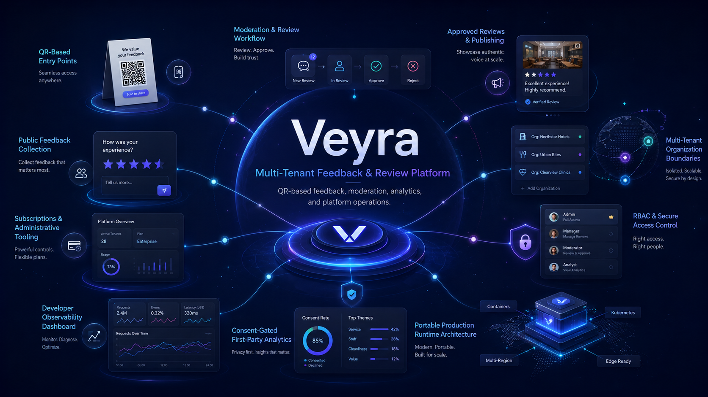
Overview & Architectural Focus
While public QR code scanning serves as the initial customer interaction point, Veyra is fundamentally a multi-tenant SaaS platform built for security, operational visibility, data governance, and tenant isolation.
The primary engineering effort was focused on building a robust backend service architecture, explicit tenant data boundaries, custom Role-Based Access Control (RBAC), developer operations analytics, consent-gated first-party analytics, and reproducible runtime deployment profiles.
Central System Narrative Flow
The complete end-to-end Veyra architecture connects public customer feedback entry with tenant management, security enforcement, developer analytics, and runtime deployment profiles:
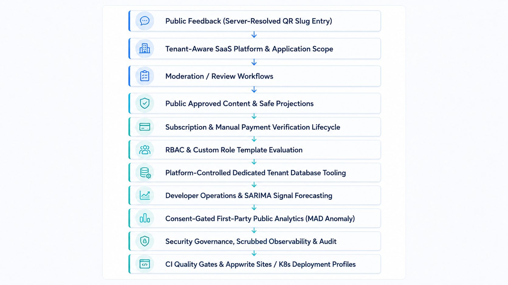
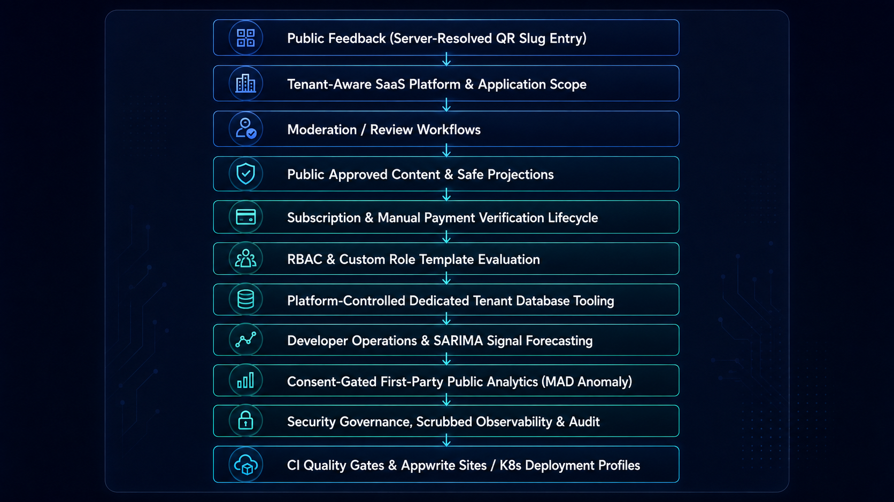
Ownership Context & Technical Leadership
Veyra is a team project developed under Nyebe Creations Studio. In my role as System Architect and Lead Developer, I provided technical direction across system design while directly implementing core backend services and security logic.
Multi-Tenant Architecture
Veyra utilizes a shared application and database architecture with tenant-aware record scoping. Every organization resource is bound to a verified tenant identifier, ensuring strict resource scoping across all platform queries.
Tenant-scoped data entities:
- Organization Members: Users registered under a specific organization.
- Feedback Submissions: Pending and archived customer submissions.
- Reviews: Moderated, approved, or rejected public review records.
- Role Definitions: Platform-scoped and tenant-scoped custom role templates.
- Subscription Records: Billing status, tier limits, and feature flags.
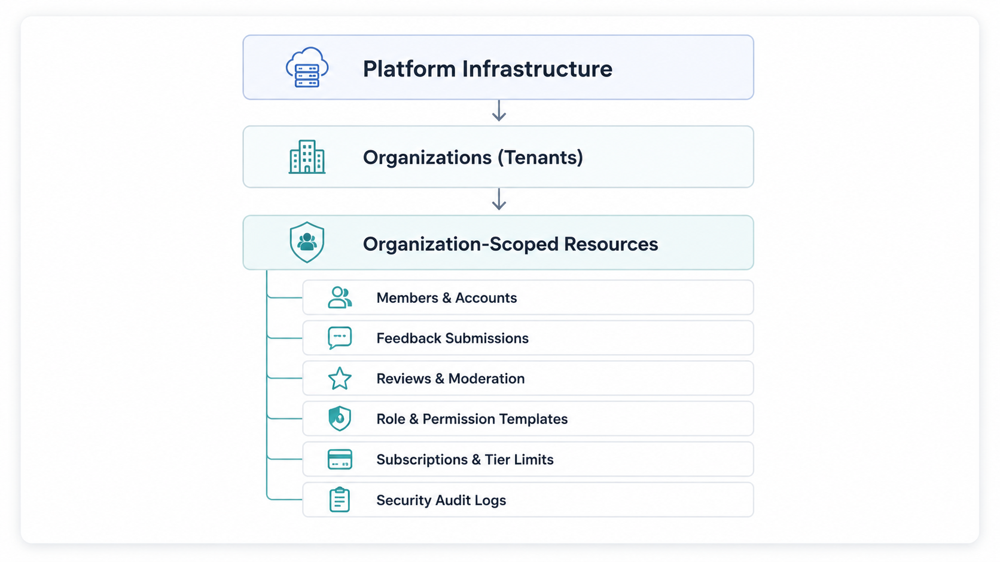
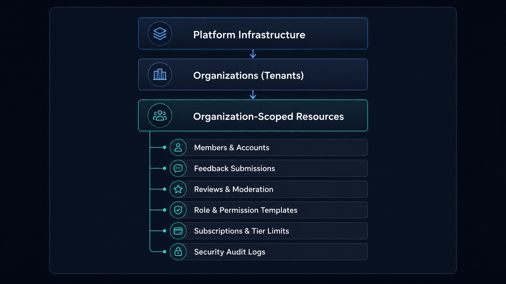
Database Isolation Model
Dedicated tenant databases are an optional, platform-controlled isolation tier rather than the default. The initial implementation is complete with platform-controlled request/approval control-plane records, database provisioning, schema verification, authenticated binding resolution, data migration/export, and guarded retirement tooling. Activation remains subject to release gates for affected data flows and erasure behavior before claiming full active per-tenant database isolation in production.
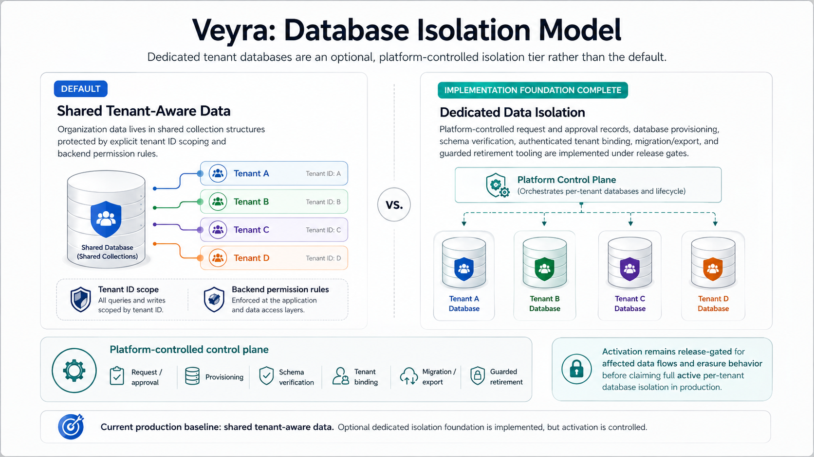
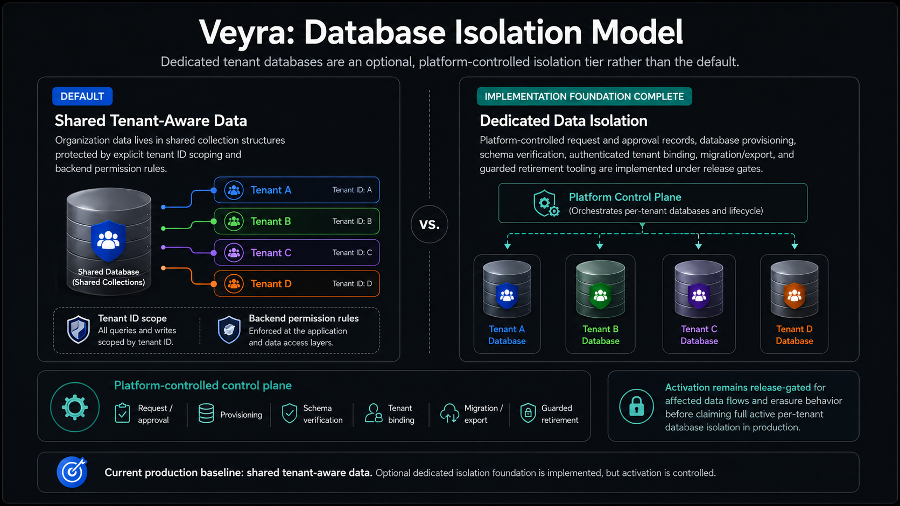
Core Tenancy Principle
In Veyra, a user request is never authorized simply because the target record exists in the system. The platform evaluates identity, organization context, and specific role capabilities simultaneously before granting access:
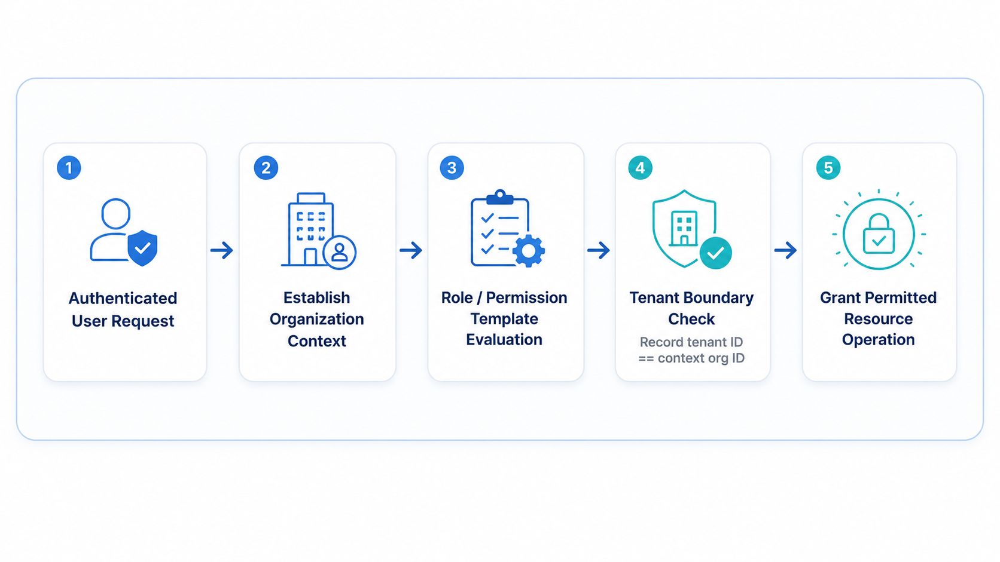
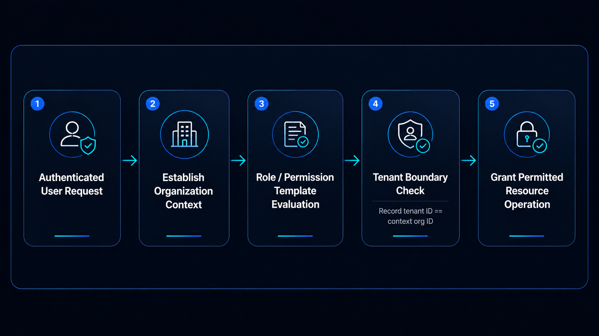
Custom Role-Based Access Control (RBAC)
Veyra implements a multi-layered security and authorization architecture combining server-side application logic, Appwrite document permissions, and database-stored role definitions.
Role family hierarchy:
- platform_owner: Global system administrator managing platform-wide tenants, custom role template definitions, billing lifecycle, and operational health.
- org_admin: Organization administrator managing organization members, subscription settings, review policies, and moderation workflows using platform-defined role capabilities.
- dev: Developer operations role with access to observability dashboards, developer action management, Appwrite Function health/management, and failure signal forecasting.
- Configurable Role Templates: Platform-managed role templates with platform and tenant scope for fine-grained capability assignment.
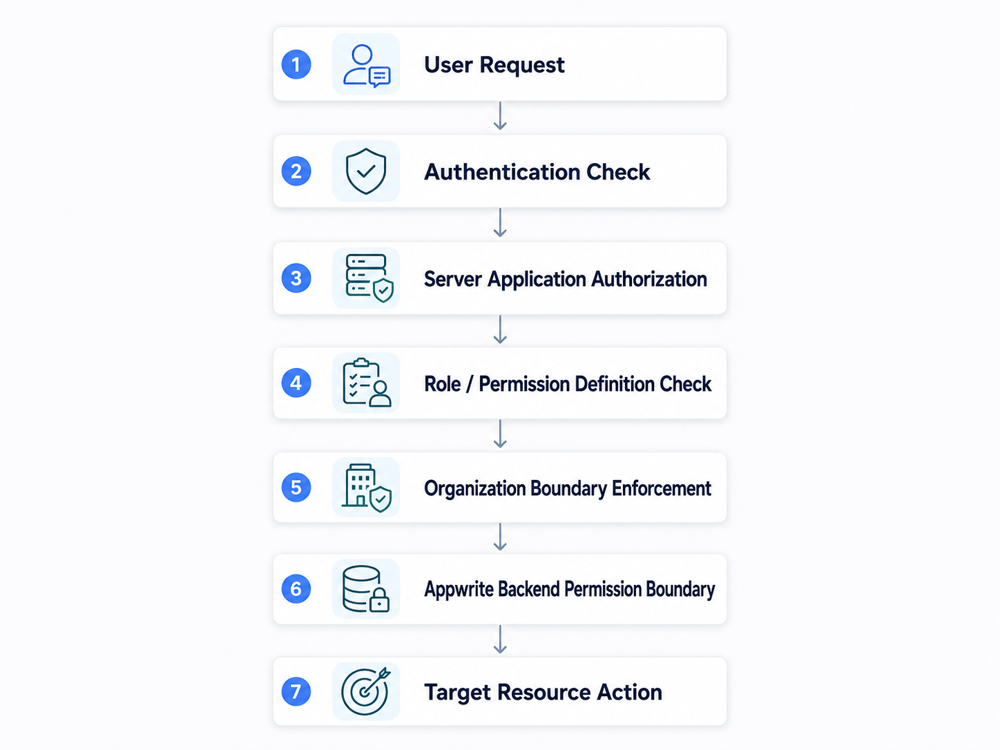
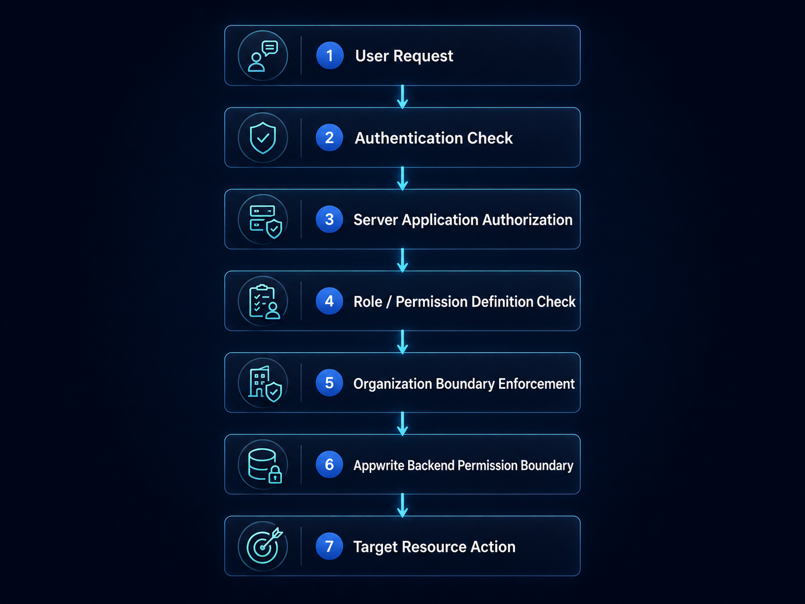
Public QR Feedback Pipeline
The public entry point for customer feedback relies on location-based QR code markers where an opaque QR slug resolves persisted organization and feedback configuration on the server, accepting anonymous submissions through validated, rate-limited public APIs without trusting a browser-supplied tenant identifier or encoding tokens in public URLs:
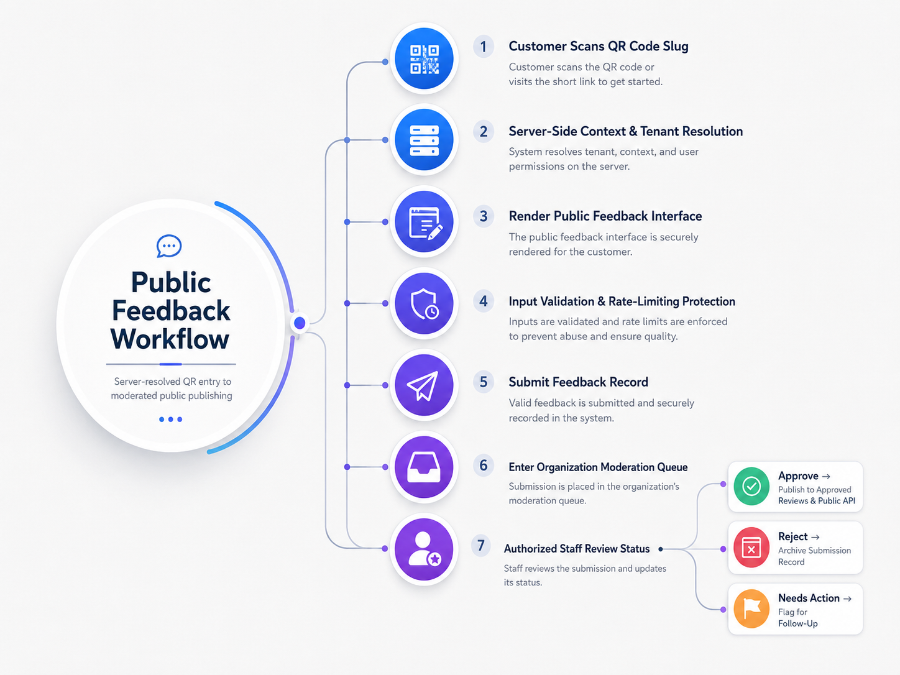
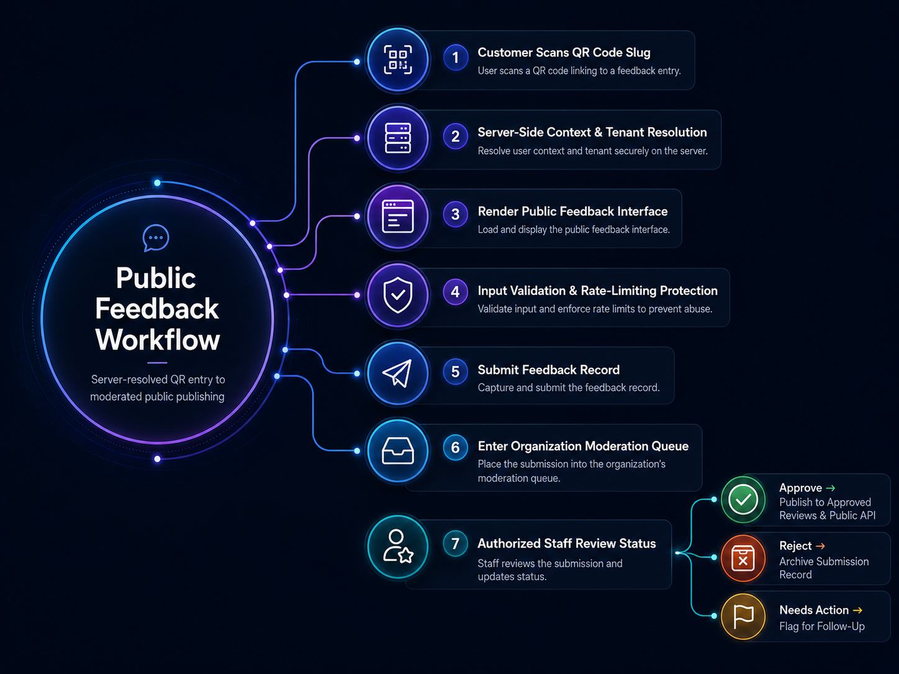
Feedback Domain & Publication Boundary
Veyra models rating, complaint, and suggestion submissions as different workflows rather than forcing every response through one generic status path. Anonymous input is bounded by typed validation and idempotency keys.
Private Feedback
↓
Moderation → Publish Decision → Publication State
↓
Public Feed Boundary
├── Allowed Origins
├── Enabled Features
├── Subscription Quota
├── Expiration
└── Revision Control
↓
External Website / Consumer
Published feeds expose controlled rating summaries, distributions, deterministic review ordering, operation IDs, and revision-aware output without opening private moderation data.
Platform Control Plane
Veyra serves tenant users, public visitors, platform owners, and developers through separate operational surfaces.
VEYRA PLATFORM
├── Tenant Operations
│ └── Feedback · QR · Settings · Payments · Members
├── Platform Operations
│ └── Accounts · Subscriptions · Discounts · RBAC · Email · Manuals
└── Developer Operations
└── Observability · Functions · Action Hub · Diagnostics
Platform owners coordinate tenant accounts, subscription offers, discounts, manual payment verification, platform manuals, role and permission controls, and email settings without collapsing those responsibilities into tenant administration.
Subscription Lifecycle & Feature Access
Organization features, usage quotas, member limits, and API access are governed by explicit subscription lifecycle management.
Key subscription capabilities:
- Implemented Lifecycle Statuses: Active paid, payment pending verification, payment rejected, overdue grace period, free version active, free version expired, and subscription required.
- Feature & Quota Access Gates: Dynamic checks enforcing feature availability and member limits based on active subscription state.
- Payment Verification Workflow: Manual payment verification paired with automated billing lifecycle transitions, renewal reminders, grace periods, and free-version fallback.
Data Governance & Boundary Architecture
Veyra Data Plane
├── Core Appwrite Database
│ └── tenant operations
├── Private Inquiry Database
│ └── messages · internal notes
├── Analytics Database
│ └── consented minimized analytics
└── Optional Dedicated Tenant Database
└── approved tenant business data
The private client-inquiry database is server-owned: inquiry records, conversation messages, and internal platform notes have no direct client SDK permissions and are accessed through server APIs.
Optional dedicated tenant storage remains platform-controlled and fails closed when a binding is invalid:
Requested → Reviewed → Approved → Provisioned → Schema Verified → Bound → Active → Export / Migration → Retiring → Retired
Data → Purpose → Classification → Authorized Readers → Retention Trigger → Retention Duration → Deletion Strategy → Legal Hold Behavior → Database Boundary
Typed classifications include Public, Internal, Confidential, Restricted Personal, Highly Restricted, and Potentially Sensitive User Content.
Privacy-Engineered First-Party Analytics
After explicit consent, Veyra measures visitors, page views, interactions, consenting visitors, views per visitor, and interactions per visitor. Breakdowns cover consent scope, route category, duration bucket, day, hour, and daily trend.
The public analytics boundary excludes authenticated identity, tenant identity, query strings, and free-form content.
Raw Consented Events
↓
Cohort Guard ≥ 5
↓
Daily Aggregates
├── 7-day trailing mean
├── Ordinary Least Squares
└── Median + MAD anomaly evidence
Separate concern: operational forecasting applies SARIMA and regression to failure, security, and cron signals; it does not forecast public visitors.
Developer Operations Console
Operational signals connect to four distinct subsystems rather than one generic dashboard.
Developer Operations
├── System Posture
│ └── failures · security signals · cron · health
├── Function Reliability
│ └── executions · successes · failures · rate · duration
├── Decision / Action Hub
│ └── ADR · Incident · Action · To Do
└── Environment Readiness & Diagnostics
└── core · integrations · operations
simple-statistics with sample guards and R-squared fit interpretation.
arima package (minimum 84 daily observations, 7-day weekly seasonality and horizon, evaluated with MAE/RMSE) and automatically falls back to a weekly seasonal-naive baseline if SARIMA does not improve MAE by at least 5%.
Operational Resilience
Distributed Appwrite-backed rate limiting, scheduled Functions, scrubbed diagnostics, private inquiries, and auditable management workflows protect operational boundaries.
Transactional Message → Brevo
↓
Accepted? ── Yes → Done
│
No: definitive rejection → Resend
Unknown acceptance → Fail Closed
no duplicate
CI, Quality Gates & Deployment Profiles
Current production runs the TanStack Start server through Appwrite Sites SSR with Appwrite Functions. The same portable server entry can run as a Docker image in the separate Kubernetes/AWS-ready production profile.
GitHub Actions quality, coverage, browser, and SonarQube workflows enforce lint/type/build contracts, test coverage, and code-health gates. Deployment architecture is documented separately from these CI checks.
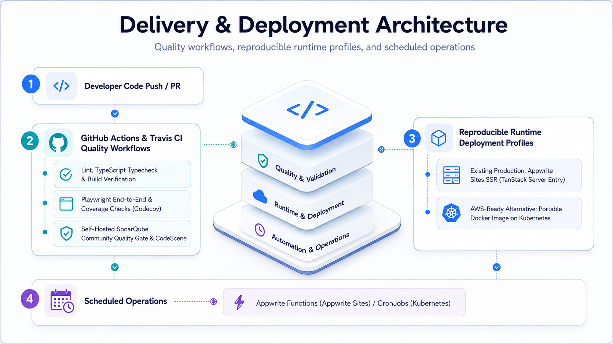
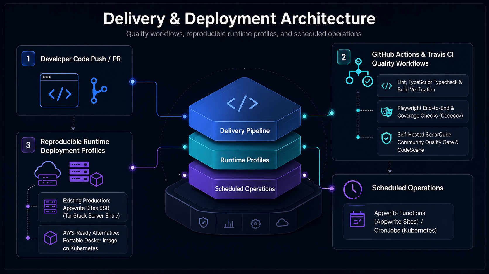
System Evolution Milestones
01 · Feedback Platform Foundation
React, TypeScript, TanStack, Appwrite, tenant workspaces, QR entry, and rating/complaint/suggestion domains.
02 · Tenant Security & Custom RBAC
Tenant boundaries, platform/tenant role scopes, permission sets, server authorization, and audit boundaries.
03 · Feedback Publication Platform
Moderation, publication lifecycle, public feeds, origin restrictions, quotas, and rating summaries.
04 · SaaS Platform Control Plane
Accounts, subscriptions, discounts, manual payments, manuals, RBAC administration, and email settings.
05 · Developer Operations
Telemetry, health posture, Functions, reliability trends, Action Hub, and safe environment diagnostics.
06 · Statistical Operations Intelligence
Linear regression with fit interpretation and SARIMA evaluated against a seasonal-naive baseline using MAE/RMSE safeguards.
07 · Privacy-First Analytics
Consent, minimized events, dedicated analytics data, cohort suppression, trailing means, OLS, MAD evidence, and withdrawal.
08 · Data Governance & Isolation
Typed retention, legal holds, private inquiries, database boundaries, and optional dedicated-tenant lifecycle controls.
09 · Operational Resilience
Distributed rate limiting, email failover, actionable management workflows, scheduled Functions, and scrubbed diagnostics.
10 · Quality & Portable Runtime
Lint/type/build gates, coverage, browser contracts, Codecov, CodeScene, SonarQube, Appwrite production, and a portable container profile.
Roadmap & Planned Features
System & Architectural Constraints
Key Technical Decisions
1. Explicit Tenant-Scoped Record Architecture & Appwrite Sites SSR
Context: Multi-tenant SaaS serving multiple organizations requiring portable runtime rendering and strict data boundaries.
Decision: Standardized on React 19 + TanStack Start and Appwrite Sites SSR, binding resource models to explicit organization IDs with application controller boundary checks.
2. Server-Side Context Resolution for QR Entries
Context: Public customers need a frictionless way to submit feedback without creating accounts or exposing organization credentials in URLs.
Decision: Resolve opaque QR slugs to persisted organization and feedback configuration on the server, accepting validated submissions through rate-limited public APIs without trusting browser-supplied tenant identifiers.
3. Actionable Developer Operations & SARIMA Signal Forecasting
Context: Maintaining operational health across services and Appwrite Functions without inflating failure counts with resolved issues.
Decision: Build an in-app developer console separating current actionable posture from historical trend regression and SARIMA daily failure volume forecasting (benchmarked against a weekly seasonal-naive baseline using MAE/RMSE).
4. Privacy-First Consent-Gated Public Analytics
Context: Measuring public feedback engagement without compromising user privacy or mixing public analytics with authenticated tenant telemetry.
Decision: Implement a consent-gated first-party analytics boundary storing minimized page interactions under random post-consent IDs, with 30-day raw event retention, minimum-cohort suppression (≥ 5), and Median/MAD anomaly evidence.
5. Multi-Layered Quality Gates & Dual Deployment Profiles
Context: Ensuring release quality across schema updates, application services, and multiple deployment targets.
Decision: Combine GitHub Actions, Playwright, Codecov, CodeScene, and self-hosted SonarQube Community quality gates while maintaining separate Appwrite production and Docker/Kubernetes-ready runtime profiles.
6. Transactional Email Resilience
Context: Delivering critical administrative notifications and verification emails reliably.
Decision: Implement ordered Brevo primary and Resend fallback dispatch with fail-closed rules around uncertain provider delivery acceptance to prevent duplicate mail.
Verified Qualitative Outcomes
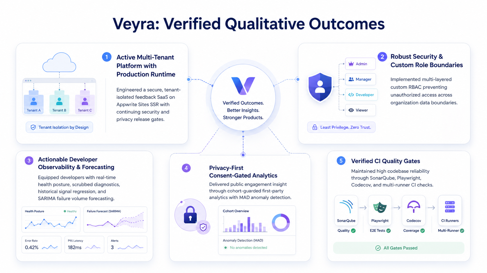
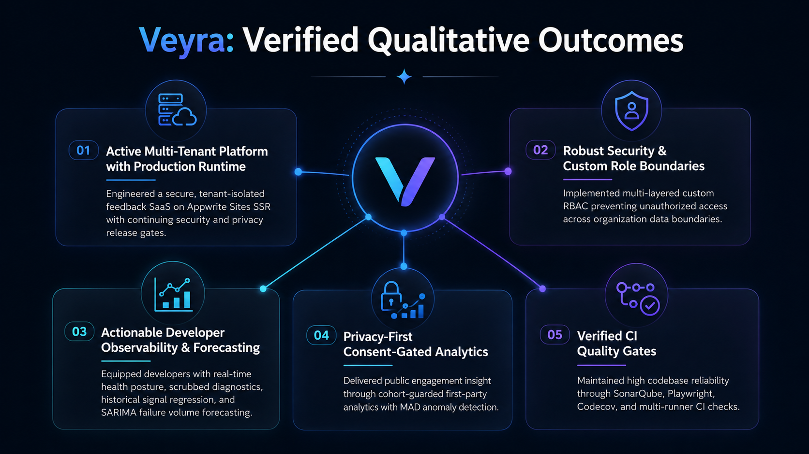
Lessons & Retrospective
Architecture & Authorization Boundaries First
Veyra demonstrated that establishing explicit tenant scoping, custom RBAC roles, and server-side context resolution upfront prevents security refactoring as feature sets expand.
Observability & Quality Engineering as Product Foundations
Integrating in-app developer operations, SARIMA signal forecasting, scrubbed diagnostics, and SonarQube quality gates made release criteria explicit and surfaced regressions before deployment.